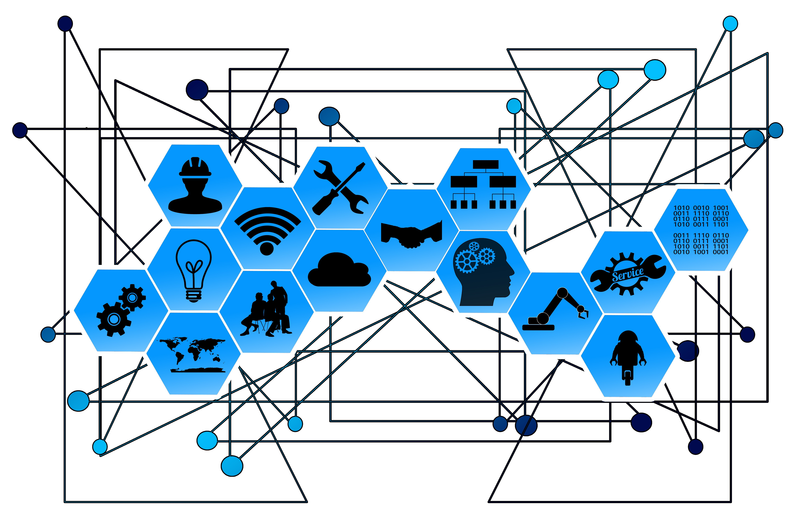

Experiencia de usuario
Definición, métricas fundamentales y recursos interactivos de navegación.
Wiki UVM es una plataforma educativa desarrollada para estudiantes de Diseño digital y web de la UVM. Donde encontrarás conceptos, recursos y ejemplos relacionados con la experiencia de usuario, diseño web y design thinking en un solo lugar.
Nuestra plataforma permite consultar información de manera rápida y organizada, facilitando tu aprendizaje mediante recursos visuales, casos prácticos e información verificada.
Tarjetas con iconos lineales para navegar rápido dentro de la wiki educativa.
Un recorrido narrativo sobre cómo la falta de información afecta la experiencia y productividad de un estudiante.
Terminas tus clases, llegas a casa con la energía a tope para avanzar en tu proyecto final y abres la Wiki para consultar tus apuntes de diseño. Todo fluye y estás listo para maquetar.

De pronto, todo se detiene. La página no carga, los menús no responden y no hay ningún mensaje que te explique qué está pasando. Esa falta de retroalimentación rompe tu concentración y es el peor enemigo de tu productividad.

¡Respiro de alivio! El sistema vuelve a la normalidad y te muestra un indicador visual claro de que la conexión es estable. Recuperas el control de la plataforma y sigues diseñando sin más interrupciones.

Aprende cómo procesan e interactúan los usuarios con los productos digitales para diseñar interfaces intuitivas.
La Experiencia de Usuario (UX) es la forma en que una persona percibe, siente e interactúa con un sitio web o aplicación. No se enfoca solo en la estética visual, sino en los procesos lógicos y cognitivos. Su objetivo primordial es estructurar el entorno digital para que el usuario encuentre información relevante y complete tareas específicas sin confusión, frustración ni pérdida de tiempo.
Una buena estrategia de UX incrementa sustancialmente la satisfacción general del usuario, reduce drásticamente los errores de operación y permite que las personas naveguen con absoluta confianza.
En el contexto de una wiki educativa, una UX sólida ayuda a estudiantes y docentes a localizar apuntes, artículos y recursos didácticos de manera ágil, garantizando que el foco de atención se mantenga en el aprendizaje y no en descubrir cómo usar la herramienta.
Aprende los conceptos básicos para iniciar un proyecto, desde la importancia de elegir bien la tipografía y paleta de colores, hasta su adaptación en diferentes dispositivos.
Aprende a balancear la planeación estructural y el impacto estético para crear sitios web altamente funcionales.
El Diseño Web consiste en planificar, estructurar, maquetar e implementar la apariencia y la navegación de un sitio web. Va más allá de colocar imágenes estéticas; se trata de una ingeniería de componentes front-end orientada a equilibrar la atracción visual con la velocidad operativa, la semántica del código y la interacción fluida.
| Componente | Propósito en el Desarrollo Web |
|---|---|
| Jerarquía Visual | Organiza el tamaño, contraste y posición de elementos para guiar la mirada del usuario de forma orgánica hacia los puntos importantes. |
| Tipografía Legible | Uso de fuentes responsivas (como Open Sans) optimizadas para lectura prolongada en pantallas, cuidando la altura de línea e interlineado. |
| Contraste de Color | Uso estratégico de paletas cromáticas institucionales que destaquen textos sobre fondos para evitar la fatiga visual. |
| Diseño Adaptable (Responsive) | Maquetación mediante flexbox, rejillas o media queries que permite la auto-reconfiguración del layout en smartphones, tablets o PC. |
| Optimización Multimedia | Compresión de imágenes y streaming eficiente de videos para garantizar velocidades de carga hiperveloces. |
Al programar tus sitios, utiliza siempre menús claros de navegación, títulos descriptivos y semánticos (H1, H2, H3), imágenes optimizadas en formatos modernos como WebP y una cantidad balanceada de espacios en blanco (espacio negativo). El espacio en blanco permite que el contenido respire y mejora la concentración del estudiante en la lectura.
Descubre el funcionamiento interno del desarrollo frontend, abarcando cómo los navegadores interpretan el código y el rol fundamental del DOM y los motores de renderizado.
Aprende el framework de innovación ágil utilizado por los líderes de la industria digital para solucionar problemas complejos.
El Design Thinking (Pensamiento de Diseño) es una metodología de innovación interactiva para resolver problemas complejos poniendo de forma absoluta al usuario en el centro de todo el proceso. Destaca por su naturaleza práctica, cooperativa y empírica, permitiendo que los equipos de diseño descubran necesidades ocultas para generar soluciones de alto impacto.
Etapa 1Empatizar: Fase de investigación cualitativa profunda. Consiste en observar, entrevistar y escuchar activamente a los usuarios reales para comprender sus problemas, necesidades latentes y realidades contextuales cotidianas.
Etapa 2Definir: Consiste en filtrar, agrupar y procesar los descubrimientos encontrados en la etapa anterior. El objetivo fundamental es delimitar el problema core a resolver mediante la redacción de un enunciado claro llamado Punto de Vista (POV).
Etapa 3Idear: Espacio libre enfocado al pensamiento puramente creativo y divergente. El equipo genera un volumen masivo de propuestas disruptivas mediante lluvias de ideas, mapas mentales o dinámicas de dibujo ágil, valorando la cantidad por encima de la viabilidad inicial.
Etapa 4Prototipar: Transformación física y tangible de las mejores ideas conceptuales en modelos económicos de rápida construcción (bocetos, wireframes interactivos en Figma o maquetas de papel) para ver cómo funciona el concepto real.
Etapa 5Evaluar (Testear): Fase de validación en campo. El equipo coloca el prototipo desarrollado directamente en manos de los usuarios para analizar sus reacciones y obtener retroalimentación cualitativa que ayude a corregir o validar la propuesta.
Conoce esta metodología de innovación y repasa sus cinco etapas clave para crear soluciones efectivas centradas totalmente en las necesidades reales de los usuarios.